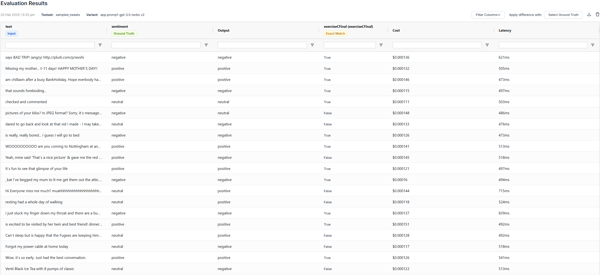
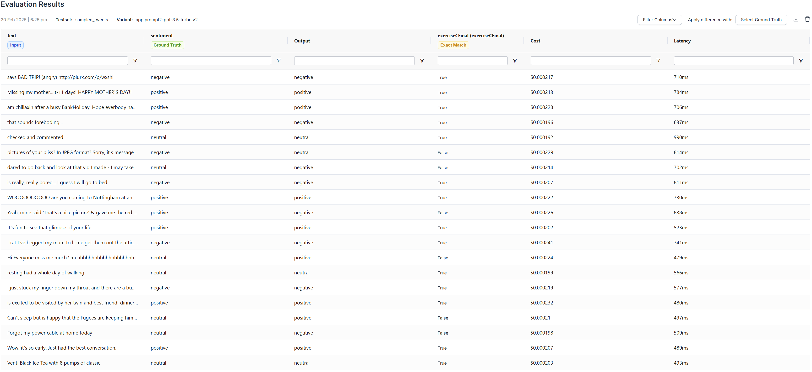
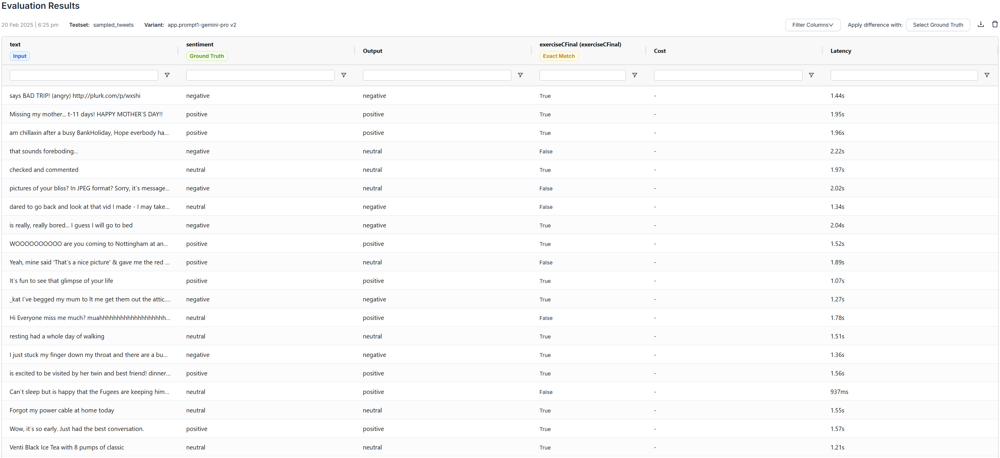
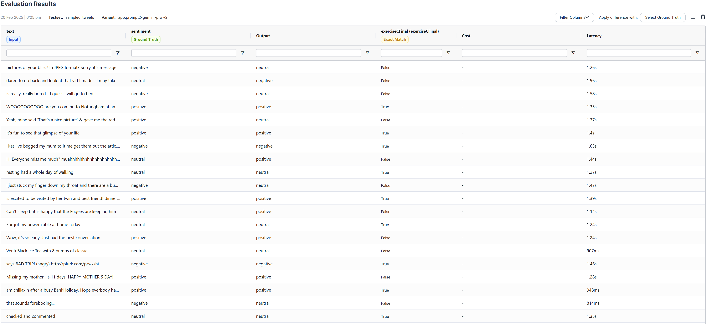
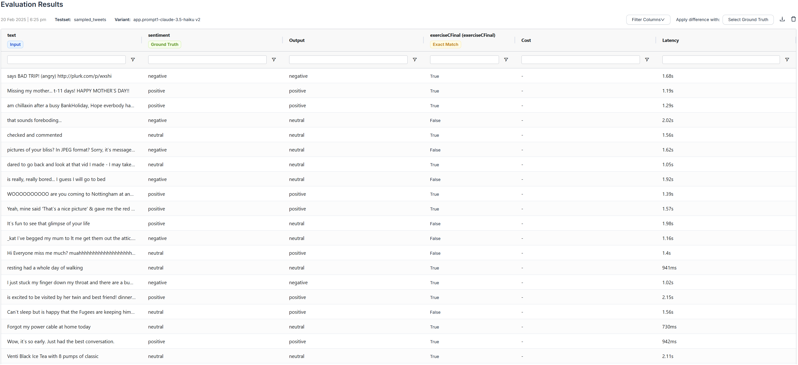
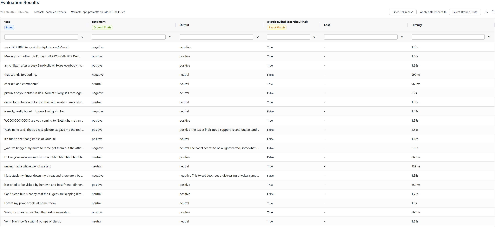
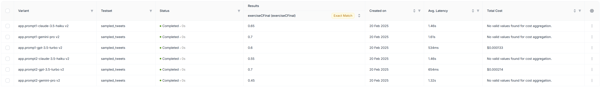
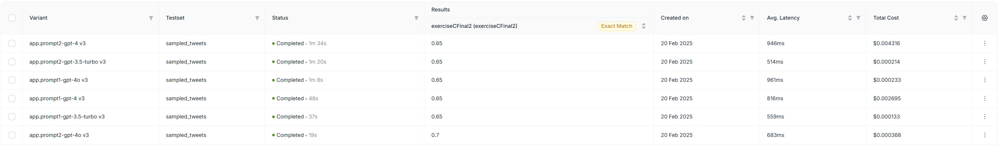

This documents my attempts to benchmark a pair of prompts on several models.
Instructions
Step one
Using your best model, identify the two best prompts you can find for detecting sentiment (positive, negative, or neutral) in a tweet.
Step two
Using the dataset example_tweets.csv, found on Canvas, randomly select 20 tweets for testing. You will need to create a Python script to select the tweets and you will include the Python script in your .qmd file under Step two, along with the selected tweets.
Step three
Using Agenta.AI, benchmark your two prompts on the 20 tweets, using any three models. Then try the same tweets on an established sentiment analysis tool.
Step four
Document your results in your .qmd file, clearly identifying the best prompt and the best model.
Step five
You must upload your .qmd file and your rendered .html file to Canvas. All must have the basename eC. Points will be deducted for any other name. (If you upload it more than once, Canvas will change the name but don’t be concerned about that.)
You should remove this instruction section from the final document.
Step one: two best prompts
Before determining my 2 best prompts, I generated 5 prompts using ChatGPT 4o.
Generating 5 Prompts
I generated my 5 initial prompts by asking ChatGPT 4o to generate 5 prompts. I specified what the prompts will be used for (as system prompt) and what the end goal is (to determine sentiment).
Prompt to generate 5 prompts
I want to use various models to determine the sentiment of a tweet. The ground truth values can be either “positive”, “negative”, or “neutral”.
Can you generate 5 prompts, that I can use as system prompts for various LLMs, such that the LLM can determine the sentiment of the tweet?
After using the prompts you generate as a system prompt, I will pass a tweet to the model, and the model should return “positive”, “negative”, or “neutral”.
Generated 5 prompts
Here are five different system prompts for sentiment classification of tweets using LLMs:
Prompt 1: Concise and Direct
You are a sentiment analysis model. Given a tweet, classify its sentiment as one of the following:
- positive
- negative
- neutral
Return only one of these three words as your response, without any explanations.
Prompt 2: Emotion-Focused Approach
Your task is to analyze the sentiment of a given tweet. Determine if the overall emotion conveyed is positive, negative, or neutral.
- If the tweet expresses happiness, excitement, or approval, return positive.
- If the tweet expresses anger, frustration, or disapproval, return negative.
- If the tweet is factual, ambiguous, or lacks strong emotion, return neutral.
Your response should be only one of these words: positive, negative, or neutral.
Prompt 3: Context-Aware Classification
Act as a sentiment classification model for tweets. Your goal is to analyze a given tweet and classify its sentiment. Follow these guidelines:
- Consider the tone, wording, and context of the tweet.
- If the tweet expresses enthusiasm, support, or positivity, return positive.
- If it expresses complaints, dissatisfaction, or negativity, return negative.
- If it is neutral, informative, or lacks sentiment, return neutral.
Your response must be one of the three words: positive, negative, or neutral. Do not provide explanations.
Prompt 4: NLP-Based Explanation (For More Advanced Models)
You are an advanced sentiment analysis model trained on textual data. Given a tweet, analyze its sentiment and classify it as one of three categories:
- positive: The tweet expresses a favorable or happy sentiment.
- negative: The tweet conveys criticism, frustration, or negative emotions.
- neutral: The tweet does not strongly express a positive or negative sentiment.
Your response should be exactly one of these words: positive, negative, or neutral. Do not include additional text.
Determining 2 best prompts
To determine the 2 best prompts, I test the 5 prompts above on 5 random entries from the example_tweets.csv and then I determine which prompts performed the best.
To determine the 5 random entries, I use the python code from Step two to select 5 tweets.
Here are the 5 tweets:
textID,text,selected_text,sentiment
ac33177eec,Venti Black Ice Tea with 8 pumps of classic,Venti Black Ice Tea with 8 pumps of classic,neutral
ef42dee96c,resting had a whole day of walking,resting had a whole day of walking,neutral
7579b68067,"is excited to be visited by her twin and best friend! dinner, star gazing, and a movie! // cool http://gykd.net","is excited to be visited by her twin and best friend! dinner, star gazing, and a movie! // cool",positive
4dad557268,says BAD TRIP! (angry) http://plurk.com/p/wxshi,says BAD TRIP!,negative
a7f72a928a, WOOOOOOOOOO are you coming to Nottingham at any point? lovelovelove<3,t? lovelovelove,positive
To determine which prompt was the best, I asked gpt-3.5-turbo to determine the sentiment for each of the tweets above for each of the system prompts by using Agenta.ai. Here are the results I got:
| 1 |
neutral |
neutral |
positive |
negative |
positive |
| 2 |
neutral |
neutral |
positive |
negative |
positive |
| 3 |
neutral |
positive |
positive |
negative |
positive |
| 4 |
neutral |
positive |
positive |
negative |
positive |
| 5 |
neutral |
positive |
positive |
negative |
positive |
From the results, prompts 3, 4, and 5, returned “positive” for the tweet with textID = ef42dee96c, but the correct sentiment was “neutral”. I hypothesize that this is because prompts 4 and 5 specific positive as “favorable” and “appreciation” respectively, and the model could have determined “resting” as “favorable” or “appreciation”.
Prompts 1 and 2 were able to get all sentiments correct; thus, I will utilize those prompts for the final benchmark.
\(\langle\) replace this with your process for developing two best prompts \(\rangle\)
Step three: benchmark
The 3 models I chose for the benchmark are gpt-3.5-turbo, openrouter/google/gemini-pro, and openrouter/anthropic/claude-3.5-haiku. The main reason I chose these 3 models is because according to this paper, Gemini Pro achieves “close but slightly inferior” results compared to GPT-3.5 Turbo. Additionally, according to this, GPT-3.5 Turbo and Claude 3 Haiku perform have relatively similar performance for the MMLU and HellaSwag metrics (other benchmarks were not available for comparison). Thus, I chose these 3 models since none have a “clear” advantage, and hopefully will provide interesting results.
Additionally, the script above sampled these 20 tweets:
textID text selected_text sentiment
4dad557268 says BAD TRIP! (angry) http://plurk.com/p/wxshi says BAD TRIP! negative
f69a80cc7e Missing my mother... t-11 days! HAPPY MOTHER`S DAY!! HAPPY MOTHER`S DAY!! positive
f93c297e3a am chillaxin after a busy BankHoliday, Hope everbody had a gd wkend! Holiday in 12 days!!! **** am chillaxin after a busy BankHoliday, Hope everbody had a gd wkend! Holiday in 12 days!! positive
24489dcb26 that sounds foreboding... that sounds foreboding... negative
16729cf827 checked and commented checked and commented neutral
bb2ef8a121 pictures of your bliss? In JPEG format? Sorry, it`s message board terminology and u don`t play w/us on the boards pictures of your bliss? In JPEG format? Sorry, it`s message board terminology and u don`t play w/us on the board negative
073a1cef9b dared to go back and look at that vid I made - I may take it down dared to go back and look at that vid I made - I may take it down neutral
b34b83c44e is really, really bored... I guess I will go to bed is really, really bored... negative
a7f72a928a WOOOOOOOOOO are you coming to Nottingham at any point? lovelovelove<3 t? lovelovelove positive
1b79929075 Yeah, mine said 'That`s a nice picture' & gave me the red x! Hope you get it working soon! 'That`s a nice picture' positive
39854df96d It`s fun to see that glimpse of your life s fun positive
67beae3c7f _kat I`ve begged my mum to lt me get them out the attic.. but she wont let me Waaa... and yes, was spoilt! hehe! s spoilt negative
b18e3e1aa1 Hi Everyone miss me much? muahhhhhhhhhhhhhhhhhhhhhhhhhhhhhhhh ;) Hi Everyone miss me much? muahhhhhhhhhhhhhhhhhhhhhhhhhhhhhhhh ;) neutral
ef42dee96c resting had a whole day of walking resting had a whole day of walking neutral
9191e574bb I just stuck my finger down my throat and there are a bunch of bumps on my tongue & throat. stuck negative
7579b68067 is excited to be visited by her twin and best friend! dinner, star gazing, and a movie! // cool http://gykd.net is excited to be visited by her twin and best friend! dinner, star gazing, and a movie! // cool positive
a260fd32ce Can`t sleep but is happy that the Fugees are keeping him company Can`t sleep but is happy that the Fugees are keeping him company neutral
f4a743a972 Forgot my power cable at home today Forgot my power cable at home today neutral
e6f129e747 Wow, it`s so early. Just had the best conversation. best positive
ac33177eec Venti Black Ice Tea with 8 pumps of classic Venti Black Ice Tea with 8 pumps of classic neutral
For all 3 of the aforementioned models, I test their ability to determine the sentiment of the 20 tweets above, for the 2 prompts from the Determining 2 best prompts step. I will utilize Agenta.ai to perform this analysis and benchmarking.
Step four: results
Text2data Results
I decided to use Text2data as the baseline and as the established sentiment analysis tool. I manually run the Tweets on the setiment analysis demo. Here are the results:
Detailed Results
The following images show detailed results:
Prompt 1: GPT-3.5 Turbo

Prompt 2: GPT-3.5 Turbo

Prompt 1: Gemini Pro

Prompt 2: Gemini Pro

Prompt 1: Claude 3 Haiku

Prompt 2: Claude 3 Haiku

Summarized Results
The following image shows the summarized results:

Here are the summarized results in a easy-to-read format:
| GPT-3.5 Turbo |
1 |
60% |
534ms |
$0.000133 |
| Gemini Pro |
1 |
70% |
1.61s |
N/A |
| Claude 3.5 Haiku |
1 |
65% |
1.46s |
|
| GPT-3.5 Turbo |
2 |
70% |
654ms |
$0.000214 |
| Gemini Pro |
2 |
45% |
1.32s |
N/A |
| Claude 3.5 Haiku |
2 |
55% |
1.46s |
N/A |
Looking at the results, the best performing model was Gemini Pro with Prompt 1 and GPT-3.5 Turbo with Prompt 2, with both having a 70% accuracy. However, GPT-3.5 Turbo had lower average latency than Gemini Pro. Claude 3.5 Haiku performed decently well with prompt 1 with an accuracy of 65%; but not so well with prompt 2 with an accuracy of 55%.
Additionally, GPT-3.5 Turbo had the least average latency, with 534ms and 654ms for Prompt 1 and Prompt 2 respectively. On the other hand, Gemini Pro and Claude 3.5 Haiku had average latencies within the range 1.32s and 1.61s. This makes sense since the GPT-3.5 Turbo is designed to be fast.
Overall best model and prompt combination: From the results, I would chose Prompt 2 with GPT-3.5 Turbo, as it had the best accuracy (70%) and second best latency (654ms).
However, it is important to note that Prompt 1 had better accuracy on average (60%, 65%, and 70%) across all models than Prompt 2 (45%, 55%, and 70%). Thus, if I had to select the prompt independent of the model, I would select Prompt 1.
Additionally, GPT-3.5 Turbo had better accuracy on average (60% and 70%) across both prompts compared to Gemini Pro (45% and 70%) and Claude 3.5 Haiku (55% and 65%). Thus, if I had to select the model independent of the prompt, I would select GPT-3.5 Turbo
Unfortunately, Agenta.ai was unable to collect the “Total Cost” for Gemini Pro and Claude 3.5 Haiku.
Step five: additional benchmarking
I was unable to get “Total Cost” information for Gemini Pro and Claude 3.5 Haiku. To get that information, I decided to run the benchmark again using the following models: GPT-3.5 Turbo, GPT-4, and GPT-4o. I use the same prompts and the same sampled tweets from the previous benchmark. I run this benchmark on Agenta.ai, same as before.
Summarized Results
The following image shows the summarized results:

Here are the summarized results in a easy-to-read format:
| GPT-3.5 Turbo |
1 |
65% |
559ms |
$0.000133 |
| GPT-4 |
1 |
65% |
816ms |
$0.002695 |
| GPT-4o |
1 |
65% |
961ms |
$0.000233 |
| GPT-3.5 Turbo |
2 |
65% |
514ms |
$0.000214 |
| GPT-4 |
2 |
65% |
946ms |
$0.004316 |
| GPT-4o |
2 |
70% |
683ms |
$0.000368 |
Based on the results, the best-performing model was GPT-4o with Prompt 2, achieving an accuracy of 70%. The other combinations also performed relatively well, each reaching 65% accuracy, and misclassifying just one more tweet compared to the top-performing model and prompt combination.
However, it is evident that the fastest model was GPT-3.5 Turbo, with average latencies of 559ms and 514ms for Prompt 1 and Prompt 2 respectively. There is no clear evidence as to which is faster between GPT-4 and GPT-4o. For Prompt 1, GPT-4 (average latency - 946ms) is slightly faster than GPT-4o (average latency - 961ms), but for prompt 2, GPT-4o (average latency - 683ms) is faster than GPT-4 (average latency - 946ms).
On the other hand, it is evident that GPT-4 has the highest total costs, and GPT-3.5 Turbo has the least total costs. However, the total costs of GPT-4o were relatively comparable to that of GPT-3.5 Turbo, especially for Prompt 2 where GPT-4o had a total cost of $0.000233 and GPT-3.5 Turbo had a total cost of $0.000214.
Even though GPT-4o with Prompt 2 performs the best, I would select GPT-3.5 Turbo (with either Prompt 1 and Prompt 2 – they had same accuracy) because the average latency and total cost is significantly less, while the accuracy only drops 5%.
Conclusion
Explain that I narrow down from 5 to 2 using 5 tweets. THen once I have narrowed down to 2 prompts, I can run the full test on 20 tweets. This allows me to be resource efficient, instead of running all 5 prompt pon 20 tweets.
Also in the results, explain which performance matters the most to me (correctness, runtime, cost).
Addendum: Features of this file
Note: delete this section before you turn in the file!
- Front matter
- Includes your name
- Includes the keyword “today” which resolves to the date on which you render the document
- Includes fonts—you should install these fonts on your computer or change the font specification to fonts you already have on your computer
- Includes the format (html) to which Quarto will render
- Includes some directives that are specific to that format: toc and embed-resources
toc causes the table of contents to be rendered, on the right side of the frame by defaultembed-resources causes any diagrams to be included in the html file itself rather than linked—that way you can just submit the html file and I can view it instead of having to submit linked files
- Headings: top level headings are preceded by a # and a space; second level headings are preceded by ## and a space; you can go down several levels by increasing the number of # symbols
- Bulleted lists, formed by preceding the list with a blank line (or a heading) and beginning each line with a dash and a space (both are important)
- LaTeX symbols, in this case \(\langle\) and \(\rangle\), which resolve to angle brackets when you render the document … you can include any LaTeX math expressions between dollar signs or double dollar signs … by the way, any dollar signs meant as real dollar signs should be preceded by a backslash, like $ this, so Quarto doesn’t get confused about whether you are starting an equation
- Programmatic keywords, preceded and followed by a backtick, in this case, the name
eB.bib bibliography file … this causes the keyword to be rendered in a code font
- Emphasis, by surrounding an important word with asterisks, causing it to be rendered in italics
Of course, you will delete all the instructions and comments in this file before you turn it in! I don’t need to read them when I read your solution. The files you turn in (the qmd and the rendered html) will just include your work. These instructions and comments are just to help you get going.